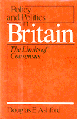

An exploration of the tension between bureaucracy and democracy in Britain
An exploration of the tension between bureaucracy and democracy in Britain


 An exploration of the tension between bureaucracy and democracy in Britain
An exploration of the tension between bureaucracy and democracy in Britain

|  |
Policy and Politics in BritainThe Limits of ConsensusDouglas E. Ashfordpaper EAN: 978-0-87722-195-1 (ISBN: 0-87722-195-2) |
"For those of us who live amidst the chronic disorders of dispersed power, the British formula may have some appeal; a democratic system that, nevertheless, concentrates the power to govern. But, according to Ashford, that very concentration of power, sustained by ancient consensus, continually impedes its own use in governing. In a series of six studies of the main areas of domestic policy, he elaborates this thesis, enriching it with brief selections from basic documents and other readings. It is a brilliant example of how a leading practitioner of policy analysis can use the study of policy making to light uppolitics, and the study of politics to light up policy making."
—Samuel H. Beer
This volume in the series Policy and Politics in Industrial States examines British effectiveness in planning and implementing government programs. In the British system, parliamentary supremacy rests on the widely accepted elite consensus that took shape a century or more before the British democracy took over the broad responsibilities associated with the modern welfare state. Modern political parties, mass democracy, even a modern administration, were grafted onto a working system, but the essential principles of cabinet and ministry responsibilities have survived with relatively little modification. The result has been a concentration of power at the top, while demands on government have proliferated.
Ashford analyzes six policy areas—administrative reform, economic policymaking, industrial relations, local and regional policies, social security (social welfare in Britain), race and immigration—to see how political constraints like these operate in a time of immensely complex government. Two cases (administrative reform and economic policy) deal with restructuring government; two deal with important social issues (social security and race relations). Each case analysis is accompanied by selected readings from official government documents and the writings of the critics of official policy.
The analysis offers a strong point of view, unusual in a textbook, that is sure to invite scholarly debate. For example, it argues that although power is quite concentrated in the British system, it is exercised most often in the direction of avoiding decisions. More often than not, the grand adversarial politics played out in parliament are ineffective in dealing with the complexities of the modern welfare state. In practice, when major changes in policy are at issue, labour and conservatives may act less like true antagonists and more like two groups sharing a consensus.
Excerpt available at www.temple.edu/tempress
"This book demands thought and deserves it. I have rarely read anything that so firmly resists the cliché and rejects the conventional wisdom. Ashford sweeps you along in an inquiry that never lets up, and continually looking at familiar facts from new angles and revealing crucial and unexpected connections."
—Samuel H. Beer, Harvard University
"This is a provocative and stimulating book. Professor Ashford focuses on some of the major current problems in British politics and government; his analysis and critiques should be a valuable contribution to understanding the issues involved."
—William Plowden, Director-General, Royal Institute of Public Administration
Editors' Preface
Preface
1. Policymaking in the British Welfare State
Political Implications of the Welfare State • Cabinet and Ministers: Does the Emperor Have Clothes? • Ministers and Departments: Who Makes Policies? • Parliament and Policymaking: The Primacy of Electoral Politics • Parties, Groups, and Voters: A Passive or Satisfied Society? • Dilemmas of Policymaking in a Consensual Society
2. Administrative Reform: Reorganizing for What?
Context • Agenda • Process • Consequences
Readings:
The Structure of Departments and Promoting Efficiency
Resistance to Civil Service Reform; Relations between Ministers and Civil Servants
Making Administration Accountable
3. Economic Policymaking: Public Expenditure for What?
Context • Agenda • Process • Consequences
Readings:
Long-Term Surveys of Public Expenditure and Resources
Callaghan's Response to Inflation; Belated Efforts to Build an Industrial Strategy
Erosion of Public Spending Controls
Adverse Effects of Public Expenditure Forecasting
Mrs. Thatcher's Struggle with Expenditure Cuts
4. Industrial Relations: Confusion of Sectoral Policies
Context • Agenda • Process • Consequences
Readings:
Trying Organizational Solutions to Industrial Conflict
Legal Responsibilities of Trade Unions
Public Sector Employment, Incomes Policy, and Inflation
Difficult Choices for the TUC
Conservatives Seek to Restrain Trade Unions
5. Local and Regional Policies: The Rejection of Territorial Politics
Context • Agenda • Process • Consequences
Readings:
The Division of Town and Country
Relations between Central and Local Government
Labour Tries to Restore Power to the Districts
Conservatives Arouse New Fears of Intevention
Center-Local Relations Again in Confusion
6. Social Security: Complexity Overcomes Politics
Context • Agenda • Process • Consequences
Readings:
Inflation and the Traditional Concept of Welfare
Conflicts over Adjusting Benefits to Inflation
Uncertainties of Pension Reform
Integrating Taxation and Social Welfare
Complexities of Limiting Social Welfare Costs
7. Race and Immigration: A Consensual Non-decision
Context • Agenda • Process • Consequences
Readings:
Governmental Indecision and Social Discrimination
Confusion in Whitehall over Race Relations Policy
Complications of Race and Sex Discrimination
8. The Limits of Consensus: One-Party Government in a Complex State
Elite Consensus and Adversarial Politics: Guarding Fences While Losing Territory • The Changing Environment of Policymaking: Can Politics Be Put to Work? • Consensual Governing and the British Welfare State
References
Index
Douglas E. Ashford is Director, Western Studies Program, Cornell University. He is also the author of Policy and Politics in France .
Political Science and Public Policy
Policy and Politics in Industrial States, edited by Douglas E. Ashford, Peter J. Katzenstein, and T.J. Pempel.
Each volume in Policy and Politics in Industrial States, edited by Douglas E. Ashford, Peter J. Katzenstein, and T.J. Pempel, is a sophisticated textbook that focuses on a single country but in a comparative policy context. Each consists of a balance of analysis and primary documents for six major issues. The issues include topics like economic policy, labor relations, social welfare, and the internal organization of the state.
© 2015 Temple University. All Rights Reserved. This page: http://www.temple.edu/tempress/titles/195_reg.html.